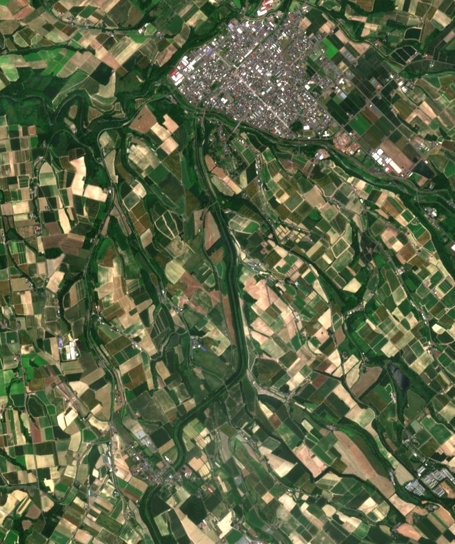
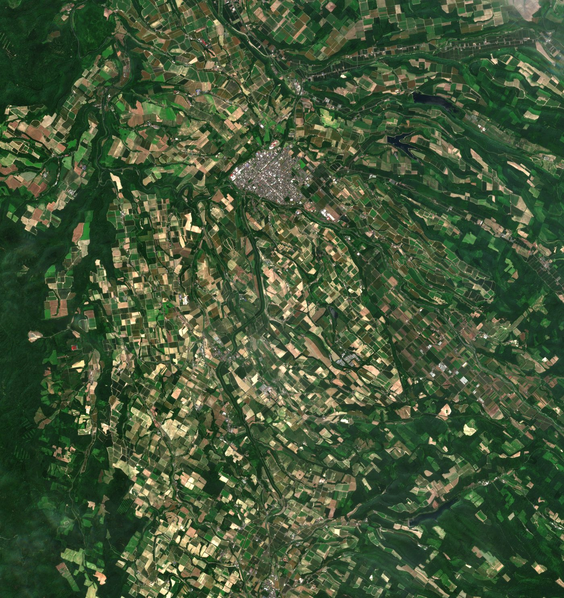

Latest Clear Image
丘と市街(定番の構図)
撮影日を読み込み中…

上が北。中央上の白い集まりが美瑛の市街地、ベージュ〜金色の区画は色づいた麦畑、緑はビート・豆・じゃがいもなど。10m解像度(1ピクセル=10m四方)。
Wide Area
美瑛全域(広域)

丘陵のうねりに沿って畑が並ぶ様子。「丘のまち」の地形が宇宙からだとよく分かります。
How It Works
この画像のしくみ
- 観測衛星Sentinel-2(ESA)の10m解像度データを使っています。美瑛の畑1枚がはっきり見える細かさです
- 衛星が美瑛上空を撮るのは2〜5日に一度。さらに雲の日もあるため、このサイトは毎朝自動で新しい撮影をチェックし、晴れた撮影があった日だけ画像を差し替えます。画像の下の撮影日が「いま表示している美瑛」の日付です
- Googleマップの航空写真より粗いのは事実です。そのかわり、あちらは「数年前のいつか」、こちらは「先週の美瑛」——鮮度が取り柄です。麦の色づきや雪の到来など、丘の「いま」はこちらにしか写りません
- 「丘の色ごよみ」や麦秋メーターの実写版としてどうぞ。次の楽しみ: 同じ場所の去年の画像と並べる「この丘、去年は何色?」を準備中です
データ出典: Sentinel-2 L2A(ESA / AWS Open Data)。画像は毎日の自動処理(GitHub Actions)で生成しています。